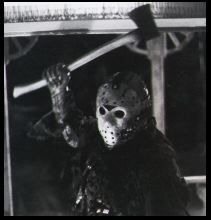
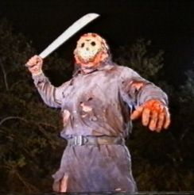
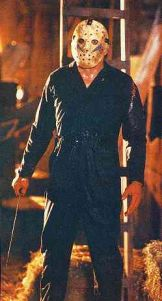

6. Friday the Thirteenth
Darkness. A faint breeze rustles the leaves of the forest, trees rising up as far as you can see. Thin branches poke into the faint moonlight, obscured as a cloud passes so very slowly. There is an owl somewhere in the distance, but the whole place sounds just too quiet. Only the breaking of the leaves underfoot cuts into the void of the night; otherwise all you can hear is your heartbeat, sped up beyond reason because you are all alone out here. Right?
Well, maybe not for the this month’s Actual Reality, taking up the horror theme of October 31st. It would seem that after last month’s shenanigans, Jon is looking for revenge. A cunning application of black magic transports the rest of the YS3 team into a deserted forest, complete with barn, church and house. The day is Friday. The date is the twenty-first. But never mind. Slipping on the cool hockey mask, Jon steps out into the darkness, the axe glinting off the moonlight.

Jamie is innocently wandering through the forest, looking for some berries to eat or fawns to chill with, when he stumbles across the first carcass. A squirrel, face contorted in the excruciating pain of the last few seconds of its life. As Jamie bends down to look, the darkness behind him gets that little bit darker, save for a sparkling piece of metal slowly rising up. Completely oblivious to this, Jamie pokes the squirrel to check it is indeed deceased, attracting the attention of its mates who have just seen their dead friend. Assumptions are made, and before the axe can find its mark a dozen furry masses leap at Jamie, tearing him to pieces. Shoulders slumped in disappointment, Jon drops the axe on an unfortunate beetle and wanders off.

Phil is the next, creeping through the wood, trying not to fall over the many vines spread all over the floor. He thinks he hears something, and looks round to see a tree branch gently swinging to a halt. Shivering, he turns round, to see Jon’s hockey mask only inches from his face. He barely has time to register the fact as the scythe comes up in one fluid motion, and reaps its victim. But as Jon leaves the scene another, smaller black mass can be seen observing his destination.
|
Jeff has managed to find the house, and is making himself a pot of tea on the stove. He turns on the gas for the hob, reaching for the matchbox. As he tries to strike the match, it falls to the ground. As he bends down to retrieve it, an arrow slams into the wall where Jeff was standing only moments before. Hearing the sound, he looks up and walks towards it as another arrow bounces off the floor where he was standing moments before. But, fascinated by these hand-crafted Mongolian projectiles, Jeff has forgotten about the gas when he lights the match for the hob. With a gut-wrenching sound that shakes the leaves from the nearby trees, flames shoot sky-high, enveloping foliage and engulfing the horizon. From out of the flames steps the hockey-masked journalist.
David is admiring the flowers near a particularly fine tree when the spear is thrown. Unfortunately, Jon throws like a girl and the spear flies a good few feet above the intended target’s head, impacting the tree. Hundreds of razor-sharp conkers drop, perforating the unfortunate YS3-bod in a particularly gruesome fashion. And just for good measure, a particularly heavy branch also falls, squishing what is left into something resembling strawberry jelly. Jon grabs his hoe, and heads off into the forest. As the scene settles once more, the small dark mass appears again, impassively observing.

Nathan is minding his own business in the forest, when Jon leaps out, wielding a bucket. Nathan attempts to flee, but not before a particularly good whack knocks his head clean off his shoulders. The weapon is dropped, but with remarkable artistic flare, the head lands back in the bucket as Jon disappears into the night.
It is not until he has started the chainsaw that Jon’s maths skills inform him that everyone is now dead, but the procuring of four star at 90.4 pence a litre was not in vain. To his amazement, the branches in front of him clear, to reveal another hockey mask-wearing psychopath, not best pleased that everyone’s already been killed and also brandishing a chainsaw. A chainsaw-duel of epic proportions follows, blades singing as they contact in the near-darkness. Trees are felled, and limbs are lost on both sides, which means that the chainsaws are soon discarded (along with the arms) in favour of kicking. Once the legs are lost, body-bashing and biting is used until Jon stands (?) victorious in the darkness, his slain opponent to his left. As he wonders how he’s going to get home, the small dark mass wanders up to him. The unfortunate beetle’s older brother, it is not best pleased with what happened earlier, and launches a vicious attack on what is left of the masked journalist. When the sun finally rises the following morning there is only one masked corpse on the ground, next to a small red smear. The violence and mayhem is finally over. At least until the next deadline comes and Nathan still hasn’t received any work from anybody…
|
Back to Contents
|
|